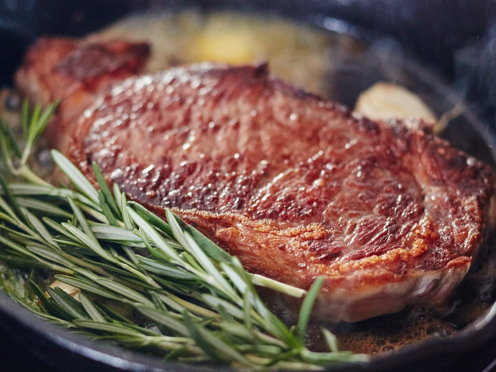

My Steak Recipe

Description
Here is my steak recipe. I almost always reverse sear my steaks since it the most consistant way to cook steaks that I know of. (barring sous-vide but that's too hard)
Ingredients
-
Steak! It can literally be any cut, cheap or expensive.
-
Salt
-
Pepper
-
Any oil works; I usually use Olive Oil
Steps
-
Preheat your oven to 200 F or 95 C.
-
While the oven is preheating, season your steak with salt and pepper. Rub with oil and oil a baking dish or wire rack, either works.
-
Bake the steak until it has an internal temperature of 125 F or 50 C for Medium Rare. Lookup the other doneness temperatures if you really don't want a perfect steak.
-
Preheat a cast iron skillet over medium-high heat when the steak is close to being finished. If you don't have a cast iron skillet any non-stick pan will work as well.
-
Turn the heat down to Medium and sear the steak 2-3 minutes on the first side until a nice sear is achieved, flip and sear 1-2 minutes.
-
Take the steak off the heat and place it on a plate to rest for 5 minutes. Please don't touch the steak at this time, trust your thermometer it will be cooked perfectly.
-
Enjoy! Remember to slice against the grain to ensure the softest bites!